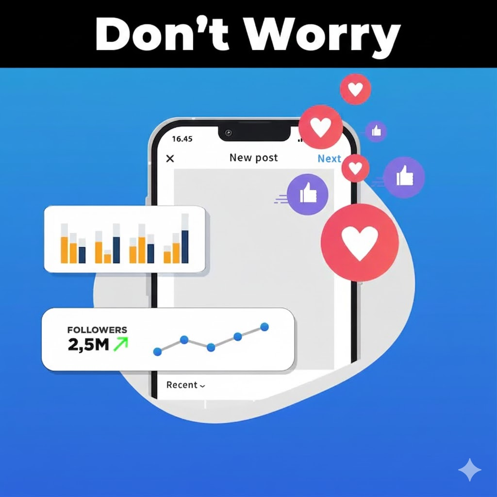
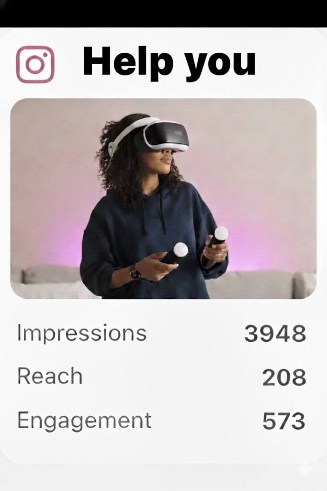
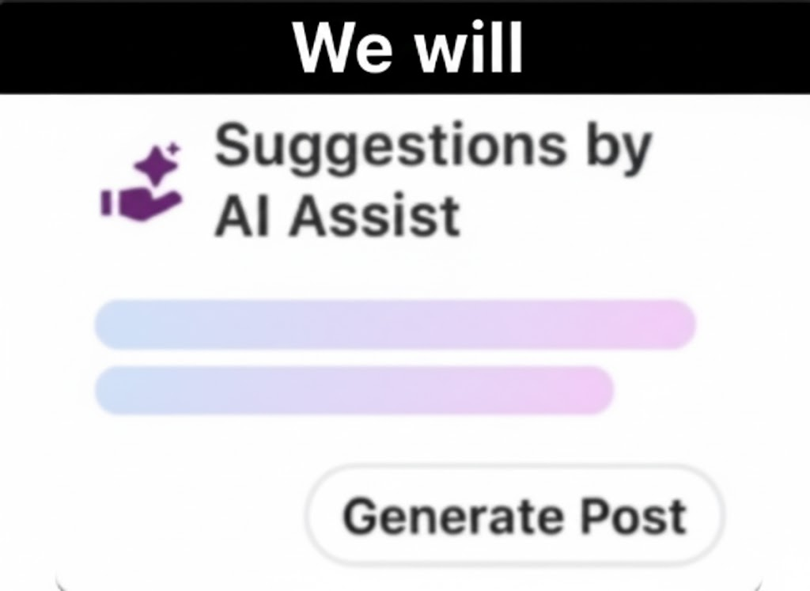
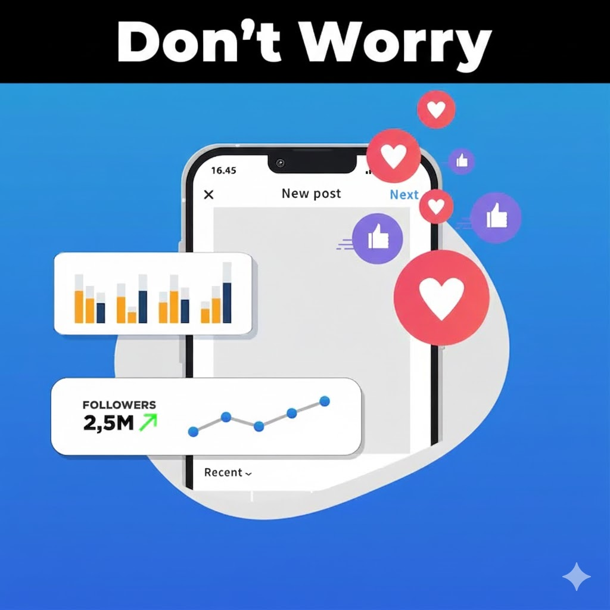
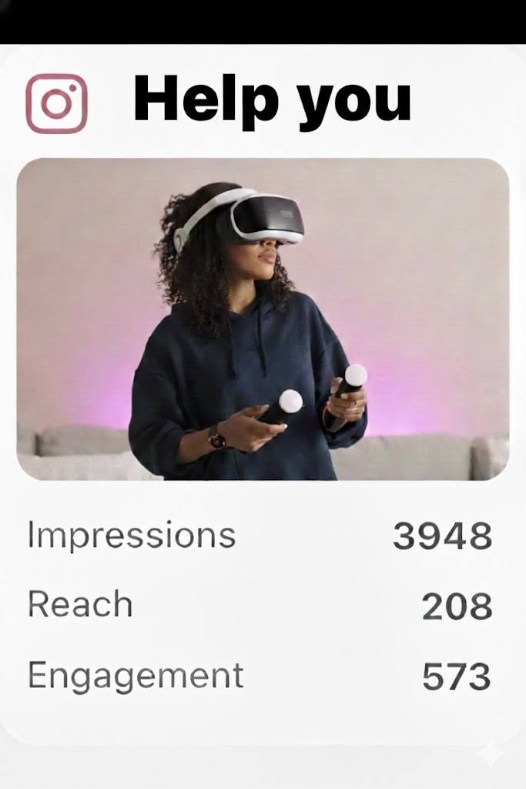
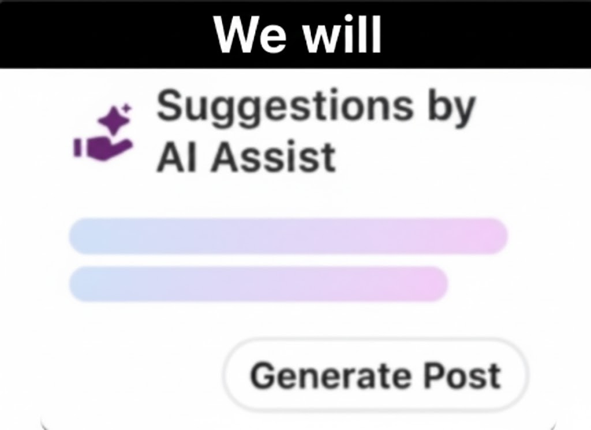
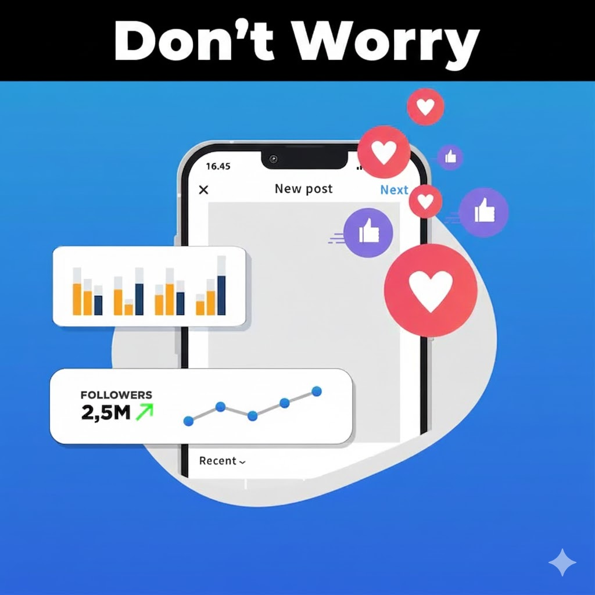
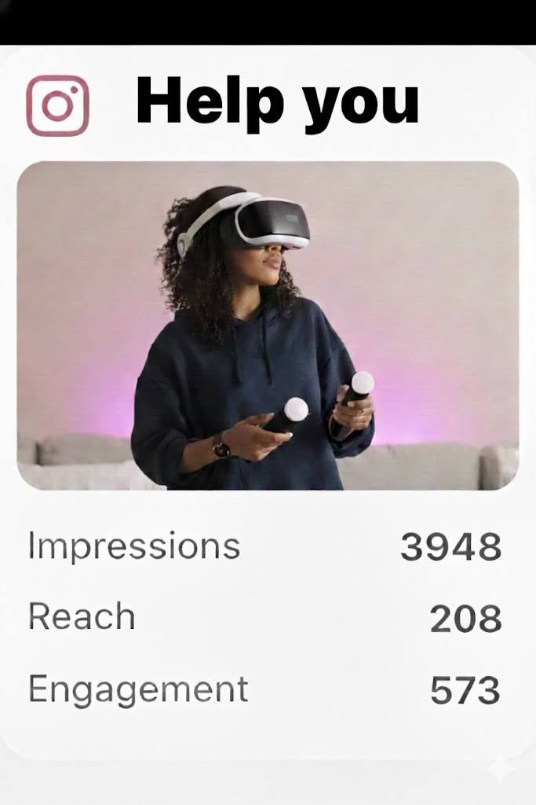
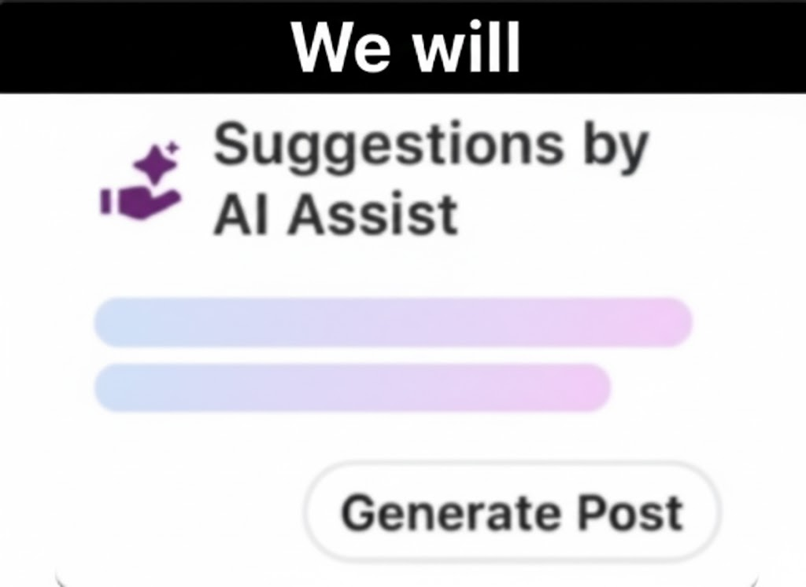

Stop guessing.
Start posting with confidence.
Data-driven insights to optimize your content strategy
 





Data-driven insights to optimize your content strategy



Analyze engagement patterns across posts and formats to understand which content performs best and resonates most with your audience.
Uncover why certain posts gain higher reach and engagement, identify the best posting times, and refine your content strategy using data-backed insights.

Monitor likes, comments, shares, reach, and engagement trends over time to measure the effectiveness of your social media efforts and make informed decisions.

Access all essential metrics—likes, comments, shares, reach, and engagement rate—through a single, centralized dashboard.

Compare Reels, Carousels, and Static posts to understand what content formats drive the highest engagement and reach.

Track performance over time using interactive charts and graphs to easily spot trends, growth patterns, and audience behavior.

Use a natural language interface to ask questions and receive automated insights, recommendations, and explanations behind viral content.

Identify the best posting times, monitor long-term engagement, and export detailed reports (CSV/PDF) for planning and decision-making.